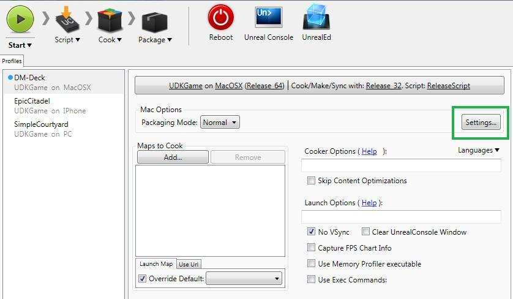
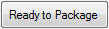
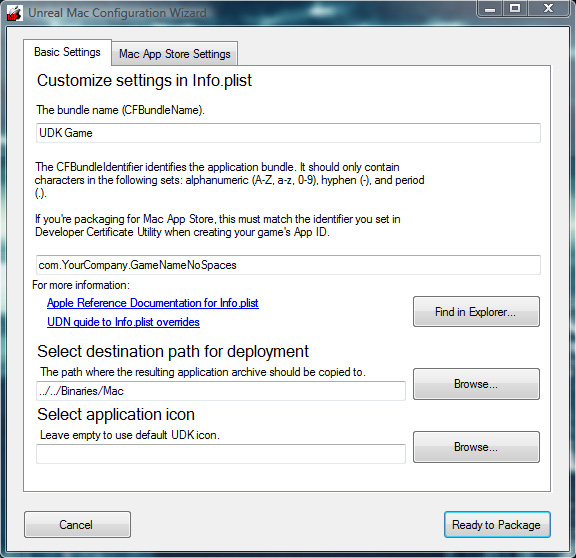
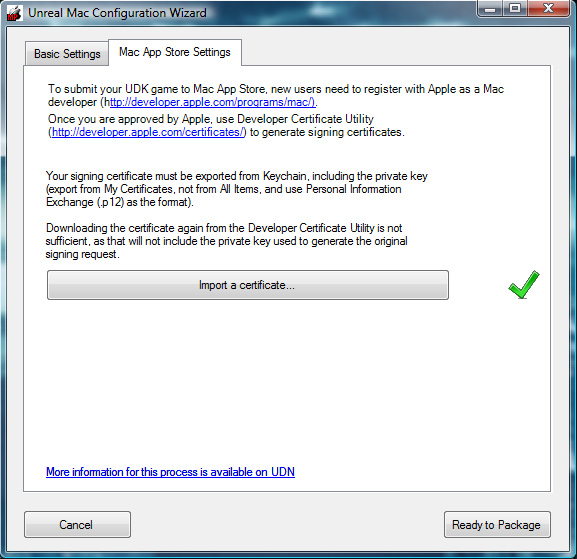

UDN
Search public documentation:
UnrealMacPackagerKR
English Translation
日本語訳
中国翻译
Interested in the Unreal Engine?
Visit the Unreal Technology site.
Looking for jobs and company info?
Check out the Epic games site.
Questions about support via UDN?
Contact the UDN Staff
日本語訳
中国翻译
Interested in the Unreal Engine?
Visit the Unreal Technology site.
Looking for jobs and company info?
Check out the Epic games site.
Questions about support via UDN?
Contact the UDN Staff
MacPackager 툴
문서 변경내역: Jeff Wilson 작성. 홍성진 번역.
개요
명령줄 인터페이스
MacPackager 명령 게임명 환경설정 [ 언어 ]각 옵션은:
- 명령
- 툴 주요 모드입니다. 다양한 모드에 대한 설명은 아래 명령 부분을 참고하십시오.
- 게임명
- 패키지로 만들려는 게임에 대한 (
UDKGame같은) 디렉토리 이름입니다. - 환경설정
- 패키지로 만들려는 게임에 대한 빌드 환경설정 (
Debug,Release,Shipping등)입니다. - [ 언어 ]
- 플러스로 분리하여 사용할 언어 목록입니다. 디폴트는
INT입니다.
명령
- packageapp
- 맥에서 압축풀고 실행할 준비가 된 어플리케이션 번들을 만들어 패키징합니다.
- packagemas
- Mac App Store 에 제출할 준비가 된 어플리케이션 번들을 만들어 패키징합니다.
- deploy
- 전에 어플리케이션 번들로 만든 zip 파일을 선택된 대상 폴더에 deploy 합니다. zip 파일 이름은
게임명과환경설정에 따라 자동으로 선택됩니다. - gui
- Unreal iOS Configuration Wizard 를 Basic Settings 탭이 선택된 상태로 띄웁니다. Basic Settings 부분을 참고하세요.
- guimas
- Unreal iOS Configuration Wizard 를 Mac App Store 탭이 선택된 상태로 띄웁니다. Mac App Store 세팅 부분을 참고하세요.
Unreal iOS Configuration Wizard
Unreal iOS Configuration Wizard 열어보기
Unreal iOS Configuration Wizard 는 Unreal Frontend 어플리케이션에서 Settings... 버튼을 눌러 직접 실행할 수 있습니다.
이 버튼을 클릭하면 환경설정 툴이 열려 맥 어플리케이션을 초기 환경설정해 주거나 개발 도중 필요하다면 업데이트해 줄 수도 있습니다.Configuration Wizard 인터페이스
Unreal iOS Configuration Wizard 인터페이스는 두 가지 탭으로 이루어져 있는데, 하나는 Basic Settings 탭으로 항상 보이는 것이며, 또 하나는 Mac App Store 세팅 탭으로 Configuration Wizard 가 Mac App Store 모드에서 실행될 때만 보이는 탭입니다. 각각의 탭에는 deploy 프로세스의 여러가지 분야에 전문화된 함수성이 담겨 있습니다. 인터페이스에는 항상 사용할 수 있는 버튼이 둘 포함되어 있습니다:| 버튼 | 설명 |
|---|---|
| Configuration Wizard 를 닫고, 진행중인 패키징 프로세스를 계속하지 않습니다. | |
|  | Configuration Wizard 를 닫고, 진행중인 패키징 프로세스가 있으면 계속합니다. |
Basic Settings
Basic Settings 탭은 맥 플랫폼에서 게임 deploy 와 테스트를 위한 셋업을 할 수 있습니다.
| 필드 | 설명 |
|---|---|
| Bundle Name | Finder 와 앱 메뉴 바의 앱 아이콘 아래 표시되는 이름입니다. (예제: UDK Game) |
| Bundle Identifier | 어플리케이션 번들에 대한 식별자입니다. Mac App Store 용 패키지를 만든다면, 예전에 애플 개발자 웹사이트에서 만든 앱 ID 번들 식별자와 일치해야 합니다. (예제: com.EpicGames.UDKGame) |
| Destination path for deployment | deploy 도중 결과 어플리케이션 아카이브가 복사되는 경로입니다. |
| Icon | 앱에 사용할 아이콘이 포함된 ICNS 파일 경로입니다. 비어 있으면 디폴트 UDK 아이콘이 사용됩니다. |
Mac App Store 세팅
Mac App Store Settings 탭에는 Mac App Store 용 App Signing 에 필요한 써드 파티 맥 어플리케이션 Development Certificate 를 임포트하기 위한 툴이 있습니다.
| 버튼 | 설명 |
|---|---|
| 전에 애플의 개발자 웹사이트에서 내려받은 Development Certificate 또는 Keychain Access 에서 익스포트한 .p12 파일을 임포트합니다. |